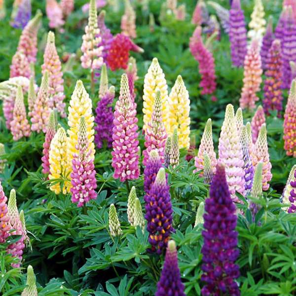

CN: Lupin, 鲁冰花，羽扇豆
BN: Lupinus
RHS
Gardener's World
gardenia
鲁冰花属于属于豌豆家族的开花植物。有大约200种鲁冰花。其中大部分来自北美和南美。鲁冰花可以在各种气候中生存。它喜欢排水良好的酸性土壤和提供足够的太阳的地区，如田野，开放森林，热带稀树草原，沙丘和道路附近的地区。鲁冰花由于能够快速占据新的栖息地并扰乱本地植物物种的生长而被归类为世界某些地区的侵入性。人们种植鲁冰花在于其观赏性，另外鲁冰花也是一种食物来源。
有关鲁冰花的那些事：
• 鲁冰花的大多数物种生长为可以达到1至5英尺高度的草本植物。
• 鲁冰花有灰绿色的叶子，上面覆盖着柔软的银色细毛。叶片由5到28个窄而尖的小叶组成。
• 鲜花密集生长，在叶子上方的穗上开放。鲁冰花花色繁多，有蓝色，紫色，红色，黄色，白色或双色花。
• 蝴蝶，蜜蜂和蜂鸟是花的主要传粉者。
• 鲁冰花的果实有毛的，大豆样的，卷曲的荚。荚里充满了最多20粒种子，通过快速爆炸性的荚果分解释放。种子通常释放到距离母体几英尺远的地方。
• 卡尔纳蓝野蝴蝶（Karner blue butterfly）主要依靠蓝色鲁冰花生存。冬天它在蓝色鲁冰花上排卵。春天Karner
毛毛虫以蓝色鲁冰花的叶子作为食物的主要来源。之后成长并转变成蛹。蝴蝶从蛹中出现，准备重新开始循环。
• ‘Lupine’来自拉丁语“lupus”，意思是“狼”。在古代人们认为鲁冰花会吸取土地的养分，像狼一样肆虐。
• 其实，鲁冰花能够提高土壤的质量。它与固氮细菌共生（互惠关系），使氮肥充实土壤。
• 鲁冰花通常种植在南瓜，黄瓜和西兰花附近，以提高土壤质量，促进这些植物的生长。
• 古罗马人和埃及人培育鲁冰花作为食物来源。
• 鲁冰花的种子仍然很受欢迎，并被用作世界各地各种美味和咸味的菜肴的成分。它们是蛋白质，抗氧化剂和膳食纤维的丰富来源。种子可以作为豆类食用，也可以粉碎成面粉。腌制的鲁冰花种子在北美和南美很受欢迎。
• 种子含有可引起人类中毒的生物碱（化学物质）。需要在水中浸泡，并在消费前进行热处理。
• 白色，黄色和蓝色的鲁冰花常用来喂牛和家禽。